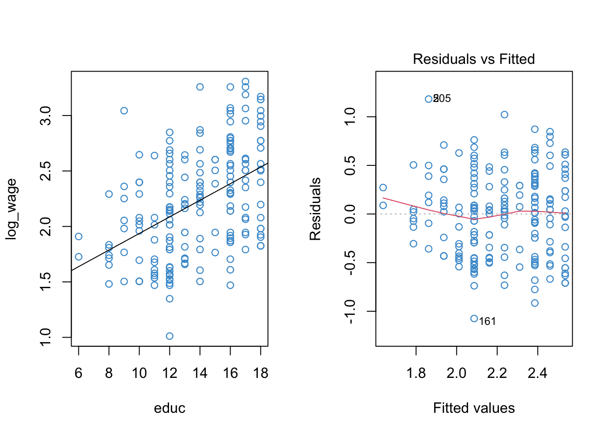

10.2 Worked Example
In Section 9.6 we saw that applying a log-transform to the Wages.Rdata example addressed non-normality of the residuals but did not do much to address nonlinearity. The summary output and diagnostic plots for the log-linear regression of wages on education are presented below.
# Load the data and take a look
load("Wages.RData")
attach(wages)
# Create log transform of wage
log_wage <- log(wage + 1)
# Regress log_wages on educ
mod1 <- lm(log_wage ~ educ)
# Check out model fit
par(mfrow = c(1,2))
plot(educ, log_wage, col = "#4B9CD3")
abline(mod1)
plot(mod1, 1, col = "#4B9CD3")
summary(mod1)##
## Call:
## lm(formula = log_wage ~ educ)
##
## Residuals:
## Min 1Q Median 3Q Max
## -1.0747 -0.3596 0.0261 0.3124 1.1816
##
## Coefficients:
## Estimate Std. Error t value Pr(>|t|)
## (Intercept) 1.18873 0.10233 11.6 <2e-16 ***
## educ 0.07480 0.00726 10.3 <2e-16 ***
## ---
## Signif. codes: 0 '***' 0.001 '**' 0.01 '*' 0.05 '.' 0.1 ' ' 1
##
## Residual standard error: 0.423 on 398 degrees of freedom
## Multiple R-squared: 0.21, Adjusted R-squared: 0.208
## F-statistic: 106 on 1 and 398 DF, p-value: <2e-16Because there is one prominent bend in our residual vs fitted plot (at \(\hat Y \approx 2.1\)), let’s see if adding a quadratic term to the model can improve the model fit.
The poly function in R makes it easy to do polynomial regression, without having to hard-code new variables like educ^2 into our dataset. In the summary output below, poly(...)n denote’s the \(n\)-th term in the polynomial. The diagnostic plots for the log-linear model with a quadratic term are also shown below.
mod2 <- lm(log_wage ~ poly(educ, 2, raw = T))
par(mfrow = c(1,2))
plot(educ, log_wage, col = "#4B9CD3")
# To plot the trend we need to we first need to order the data and the predicted values ...
sort_educ <- educ[order(educ)]
sort_fitted<- fitted(mod2)[order(educ)]
points(sort_educ, sort_fitted, type = "l")
plot(mod2, 1, col = "#4B9CD3")
summary(mod2)##
## Call:
## lm(formula = log_wage ~ poly(educ, 2, raw = T))
##
## Residuals:
## Min 1Q Median 3Q Max
## -1.0472 -0.3894 0.0188 0.3182 1.1413
##
## Coefficients:
## Estimate Std. Error t value Pr(>|t|)
## (Intercept) 1.86296 0.40659 4.58 6.2e-06 ***
## poly(educ, 2, raw = T)1 -0.03149 0.06247 -0.50 0.614
## poly(educ, 2, raw = T)2 0.00398 0.00233 1.71 0.087 .
## ---
## Signif. codes: 0 '***' 0.001 '**' 0.01 '*' 0.05 '.' 0.1 ' ' 1
##
## Residual standard error: 0.422 on 397 degrees of freedom
## Multiple R-squared: 0.216, Adjusted R-squared: 0.212
## F-statistic: 54.8 on 2 and 397 DF, p-value: <2e-16Let’s start with the plots. Based on the left-hand panel, it looks like a quadratic relationship provides a reasonable representation of the data. Based on the right-hand panel, I would conclude that the apparent non-linearity in the residual vs fitted plot has been reduced
Turning to the summary output, there are three main take-aways:
Compared to
mod1above, we can see the linear term (poly(educ, 2)1) is no longer statistically significant. This is because the linear and quadratic terms are highly correlated (the correlation is over .99 in the example). Consequently, the focus here should be on what the quadratic term adds to the model.The test of the quadratic term (
poly(educ, 2)2) tells us that, controlling for the linear relationship between log-wages and education, the quadratic term is statistically significant at the .1 level (it is not statistically significant at the .05 level). Recall from Chapter 7 that this same information could be obtained by testing the change in R-squared that results when adding the quadratic term into the model (e.g., useanova(mod1, mod2)in R).As discussed in the previous section, interpreting the numerical values of the regression coefficients in a polynomial regression is no easy feat (especially with a log-transformed outcome variable!). The sign of the quadratic term does tell us something specific about the relationship (do you remember what that is?), but the interpretation of the numerical values is not straight forward. Therefore, as suggested above, it is often sufficient to focus on whether the two predictors (i.e.,
educandeduc^2) together explained a significant proportion of variation in the outcome variable. This information is provided by the F-test of R-squared. For simple models like this one, scatter plots with fitted lines (as above) can also be helpful for interpreting the relationship between the variables.
What is your interpretation of the log-linear model with the quadratic term for education included? Was the assumption of linearity problematic? Does the model with a quadratic term fit the data better than a model with only a linear term? What would you do next? Please list any other questions you have about polynomial regression and I’ll be happy to address them in class!
For your reference, a model with the cubic term added is shown below.
mod3 <- lm(log_wage ~ poly(educ, 3, raw = T))
summary(mod3)##
## Call:
## lm(formula = log_wage ~ poly(educ, 3, raw = T))
##
## Residuals:
## Min 1Q Median 3Q Max
## -1.0344 -0.3734 0.0203 0.3107 1.1612
##
## Coefficients:
## Estimate Std. Error t value Pr(>|t|)
## (Intercept) 3.550616 1.310245 2.71 0.007 **
## poly(educ, 3, raw = T)1 -0.466107 0.326813 -1.43 0.155
## poly(educ, 3, raw = T)2 0.039594 0.026386 1.50 0.134
## poly(educ, 3, raw = T)3 -0.000933 0.000689 -1.35 0.176
## ---
## Signif. codes: 0 '***' 0.001 '**' 0.01 '*' 0.05 '.' 0.1 ' ' 1
##
## Residual standard error: 0.422 on 396 degrees of freedom
## Multiple R-squared: 0.22, Adjusted R-squared: 0.214
## F-statistic: 37.2 on 3 and 396 DF, p-value: <2e-16# Same plots as above, reusing variable names here
par(mfrow = c(1,2))
plot(educ, log_wage, col = "#4B9CD3")
sort_fitted <- fitted(mod3)[order(educ)]
points(sort_educ, sort_fitted, type = "l")
plot(mod3, 1, col = "#4B9CD3")
10.2.1 Note on orthogonal polynomails*
Before moving on, a quick (and optional) note on orthogonal vs. raw polynomials in R. The main thing to know is that both approaches yield the same total variance explained, so if we use the techniques for model building (as illustrated above), it doesn’t matter which approach we use.
When using orthogonal polynomials, the different polynomial terms (e.g., \(X, X^2, X^3\)) are uncorrelated. This means that the \(t\)-test of each regression coefficient can be interpreted as testing the proportion of variance associated uniquely with that term of the polynomial. So, using orthogonal polynomials means that we don’t really need to do the model building stuff (e.g., sequential blocks)– it’s already built into the coefficients.
The downside of orthogonal polynomials is that, beyond their sign, the regression coefficients are complicated to interpret. But, these coefficients aren’t easy to interpret anyway, and we often don’t care much about their exact values.
In summary, it’s often simpler to use orthogonal polynomials in practice, even though the math underlying these polynomials is quite complicated and beyond the scope of the course.
This use of orthogonal polynomials is illustrated below. You’ll see that most of the output is the same, except the numerical value and associated tests of the regression coefficients on the polynomial terms. In particular, the linear trend is statistically significant in the output below, because it is no longer correlated with the quadratic trend.
mod2a <- lm(log_wage ~ poly(educ, 2, raw = F))
par(mfrow = c(1,2))
plot(educ, log_wage, col = "#4B9CD3")
# To plot the trend we need to we first need to order the data and the predicted values ...
sort_educ <- educ[order(educ)]
sort_fitted <- fitted(mod2a)[order(educ)]
points(sort_educ, sort_fitted, type = "l")
plot(mod2a, 1, col = "#4B9CD3")
summary(mod2a)##
## Call:
## lm(formula = log_wage ~ poly(educ, 2, raw = F))
##
## Residuals:
## Min 1Q Median 3Q Max
## -1.0472 -0.3894 0.0188 0.3182 1.1413
##
## Coefficients:
## Estimate Std. Error t value Pr(>|t|)
## (Intercept) 2.2199 0.0211 105.10 <2e-16 ***
## poly(educ, 2, raw = F)1 4.3613 0.4224 10.32 <2e-16 ***
## poly(educ, 2, raw = F)2 0.7237 0.4224 1.71 0.087 .
## ---
## Signif. codes: 0 '***' 0.001 '**' 0.01 '*' 0.05 '.' 0.1 ' ' 1
##
## Residual standard error: 0.422 on 397 degrees of freedom
## Multiple R-squared: 0.216, Adjusted R-squared: 0.212
## F-statistic: 54.8 on 2 and 397 DF, p-value: <2e-16To find out more, use help(poly). Additionally, a good discussion of this point is available on StatExchange: